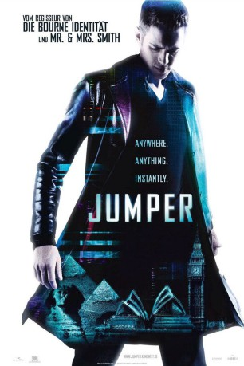

#2931 Jumper
 
 IMDB-Wertung: 6.1 / 10
IMDB-Wertung: 6.1 / 10  Metascore: 35
Metascore: 35 
David Rice hatte sich immer für einen ganz normalen Typen gehalten, bis er mit 15 seine Fähigkeit zu teleportieren entdeckt. Binnen Sekunden kann er an jeden beliebigen Ort der Welt springen. Die perfekte Methode, seinem tristen Elternhaus zu entkommen und bei einem Zwischenstopp im Banktresor gleich noch das nötige Kleingeld für ein Luxusleben in New York einzusammeln. David genießt seine neue Mobilität in vollen Zügen: Morgens zum Surfen nach Hawaii, mittags Lunch auf dem Kopf der Sphinx und abends ein Abstecher in die Londoner Clubszene. Als er den abgebrühten Griffin kennenlernt, stellt sich heraus, dass er längst nicht der einzige Jumper ist. Doch sein Leben ist in höchster Gefahr. Die hochspezialisierte Geheimorganisation der Paladinen will Menschen wie David auslöschen – und ihr skrupelloser Anführer Cox ist ihm ganz dicht auf den Fersen …
Jahr: 2008
Dauer: 88 Minuten
FSK: 12
Land: USA Studio: 20th Century FoxTonspuren:
Untertitel:
Auflösung: 1080p (1920x816) Größe: 11980 MB
Genre: Action, Thriller, Sci-Fi, Abenteuer
Regisseur:  Doug Liman
Doug Liman
Drehbuch: David S. Goyer, Jim Uhls, Simon Kinberg, Steven Gould
Soundtrack: John Powell
Darsteller:
 Hayden Christensen als David Rice
Hayden Christensen als David Rice Jamie Bell als Griffin
Jamie Bell als Griffin- Rachel Bilson als Millie
 Diane Lane als Mary Rice
Diane Lane als Mary Rice Samuel L. Jackson als Roland
Samuel L. Jackson als Roland Michael Rooker als William Rice
Michael Rooker als William Rice AnnaSophia Robb als Young Millie
AnnaSophia Robb als Young Millie- Max Thieriot als Young David
 Jesse James als Young Mark
Jesse James als Young Mark Tom Hulce als Mr. Bowker
Tom Hulce als Mr. Bowker Kristen Stewart als Sophie
Kristen Stewart als Sophie- Teddy Dunn als Mark Kobold
 Barbara Garrick als Ellen
Barbara Garrick als Ellen Shawn Roberts als English Bartender
Shawn Roberts als English Bartender Nathalie Cox als English Beauty
Nathalie Cox als English Beauty- Meredith Henderson als Fiona
 Tony Nappo als NYPD Detective
Tony Nappo als NYPD Detective- Clark Beasley Jr. als Bank Guard
- Adam Chuckryk als London Pub Patron
- Valentino Visentini als Police Officer
- Josie Lau als Hospital Aid
- Stuart Clark als Palladin , uncredited
- Ryan Grantham als 5 year old Davey , uncredited
- Angelica Lisk-Hann als Paladin , uncredited
 Kevin Makely als Beef , uncredited
Kevin Makely als Beef , uncredited- Danny MAlin als Hoolihan's Bar Patron , uncredited
- Armando Pucci als Italian Man , uncredited
- Michael Winther als Day Bank Manager
- Massimiliano Pazzaglia als Italian Desk Cop
- Damir Andrei als Psychologist
- George King als Owner Of Millie's Old House
- Simona Lisi als Italian Woman
- Matteo Carlomagno als Italian Detective
- Fabrizio Bucci als Italian Police Officer 1
- Giorgio Santangelo als Italian Police Officer 2
- Marcello Santoni als Italian Cabbie 1
- Franco Salvatore Di Stefano als Italian Cabbie 2
- Brad Borbridge als Coffee Shop Manager
- Angelo Lopez als Doorman
- Roberto Antonelli als Bellhop
- Veronica Visentin als Italian Ticket Agent
- Christian Pikes als Toby
- George Ghali als Landlord
- Ryny Gyto Ouk als Jungle Jumper
- Frantisek Jicha als Kid in Detroit Airport
- Robin Zenker als Kid in Detroit Airport
- Masahiro Kishibata als Angry Japanese Cook
- Sumiko Yamada als Japanese Chef's Wife
- Tamaki Mihara als Japanese Chef's Daughter
- Mansaku Ikeuchi als Japanese Scientist
Datei: X:\2008(G-M)\Jumper (2008, FSK12, 1920x816).mkv seit 01.01.2016
Festplatte: HD 2008(G-Z)-2009(A-F)
 Es gibt insgesamt 73 Filme in der Gruppe '2008(G-M)'
Es gibt insgesamt 73 Filme in der Gruppe '2008(G-M)'